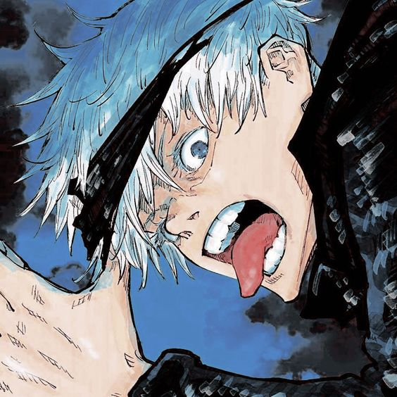
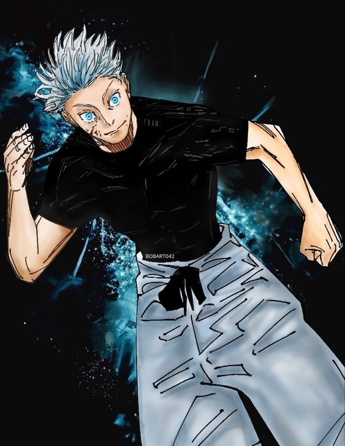
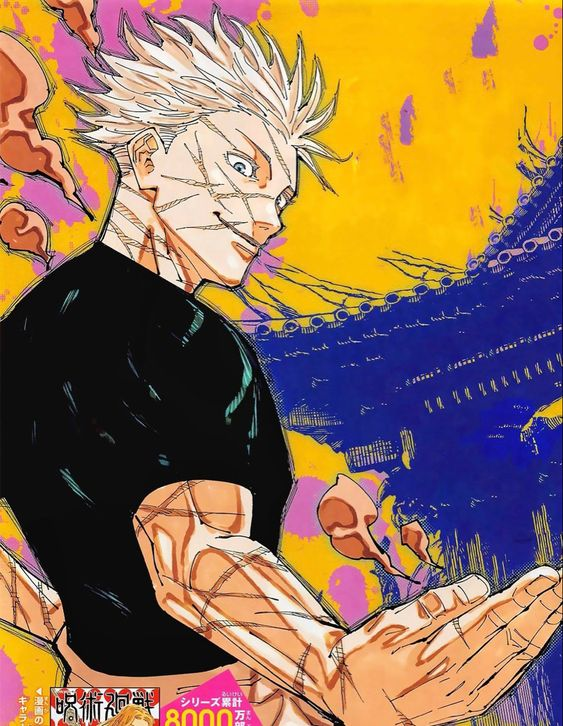

| Home | Personagem |
|  | Aparência |
| 
Personalidade
Satoru é extremamente confiante em suas habilidades e reputação como um poderoso feiticeiro, acreditando ser invencível. Sua opinião sobre os outros muitas vezes só vai até o seu julgamento de sua força, e ele é bastante apático em relação a qualquer um que ele considere fraco. Além disso, muito influenciado por seu próprio desejo de poder, ele é muito arrogante. Ele está convencido de que ele é o mais forte do mundo, o que ele tecnicamente é, afirmando, durante sua luta com Toji Fushiguro, que "em todos os céus e terra, só ele é o honrado". Isso pode ser ainda mais exemplificado quando ele foi encarregado de proteger Riko Amanai, uma das poucas pessoas "fracas" pelas quais ele genuinamente cresceu para mostrar compaixão. No entanto, qualquer empatia de sua morte logo foi negada por sua extensa quantidade de orgulho e arrogância depois de aperfeiçoar sua técnica amaldiçoada reversa em sua batalha seguinte contra Toji Fushiguro.
Durante intensas batalhas, Satoru é visto ocasionalmente caindo em um estado de luta frenético, instado por sua determinação pela vitória e prova inegável de que ele sozinho é o mais forte. Seu estilo combativo é caracterizado por seus ataques agressivos e dominadores, enquanto ostenta suas técnicas dominadas para seus oponentes. Além disso, em uma crise, ele é capaz de ter sangue frio. Ele priorizará a destruição de seus inimigos em vez de salvar pessoas inocentes quando acreditar que o sacrifício é inevitável. No entanto, isso só se estende às pessoas mortas por seu oponente; ele não fará nenhum dano duradouro ou matará ninguém inocente para ganhar vantagem.
No entanto, apesar de sua altivez e força, Satoru é mais humano do que parece pela primeira vez. Depois de derrotar Toji, Satoru recuperou o cadáver de Riko com um olhar triste, mostrando que, embora sua recente vitória vaidosa temporariamente obscurecesse seus sentimentos, ele ainda sentia alguma tristeza por sua morte. Ele tentou matar os membros do Grupo Religioso Star que estavam rindo da morte de Riko, mas foi impedido por Suguru Geto - em quem ele confiava como uma bússola moral na época - antes de tomar qualquer ação. Além disso, Satoru ficou visivelmente horrorizado e em pânico depois de saber que Suguru, seu único melhor amigo, havia se tornado um usuário de maldição assassino. Satoru tentou argumentar com seu amigo, mas acabou percebendo e aceitando que ele perdeu a única pessoa que ele realmente via como igual. Depois de ter que acabar com Suguru antes que mais calamidade surgisse, foi o trauma de Satoru por perder seu melhor amigo que causou sua queda final em Shibuya. Ele também ficou perturbado quando Yuji aparentemente morreu.
O objetivo de Satoru é reformar o mundo do jujutsu de baixo para cima através da educação. Ele procura promover uma nova geração de feiticeiros que ele espera que um dia se tornem seus iguais.
|
| 
Curiosidades
2-Sua música tema:Gege Akutami, autor de Jujutsu Kaisen , disse que acredita que as músicas-tema de Gojo Satoru seriam 'Mada Minu Asu Ni' do Asian Kung Fu Generation, lançado em 2008, mas também “Shame on Me ” por Avicii em 2013. Essas músicas deveriam refletir o caráter e a personalidade de Gojo.
3-Significado do nome:O nome de Satoru Gojo, ‘Satoru’, é um nome japonês dado a meninos e tem muito significado. Vem do verbo japonês entender ou saber.
O nome pode ser interpretado de forma diferente com base nos caracteres Kanji usados. Uma opção interessante é alcançar uma percepção mais elevada, o que refletiria sua habilidade nos Seis Olhos, o que lhe permite ter uma percepção sobre-humana e usar seus poderes ao máximo.
4-Um fã de digimon:Digimon é a abreviação de Digital Monsters e é uma franquia japonesa muito famosa composta de mídias como anime, mangá, videogames, filmes, cromos e brinquedos.
5-Guloso:Satoru Gojo costumava se interessar menos por doces até começar a comê-los para estimular o cérebro. Depois disso, ele desenvolveu uma queda por doces e um amor inegável por doces e qualquer coisa doce. |